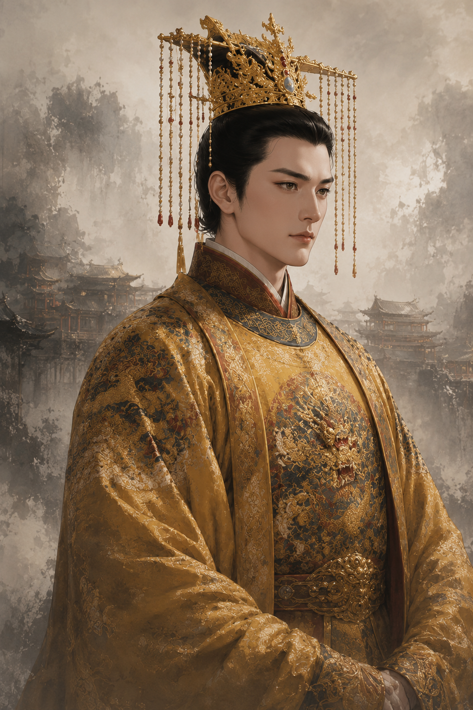

游戏「开场白」重制 ——「入世仪典」。现状只是
剧本名+年代+一段逐字文本框
；重做后给开局一份分量：
题署印鉴
·
玩家身份立绘
·
开场叙事卷
(逐字浮现) ·
三大开局戏眼
·
鎏金入世
。
明
天启七年 · 九月
公元 一六二七 · 秋 | 新 帝 登 基 · 甫 一 月

尔 之 所 履
朱由检
明思宗
年十七，即位甫一月，朝中大半非尔旧识。九千岁魏忠贤仍据司礼监、东厂——君心之初试，国运之大考。
开 局 戏 眼
🗡
处置魏阉
诛之之时机与手段
⚔️
辽东经略
锦州欠饷·人选难择
🌾
陕北赈饥
饥民啸聚·财源何出
开 卷
按 空格 略过逐字 · 史册自此而起
重制要点：
题署
朱印+碑刻金字剧本名/年代；
身份
玩家立绘描金框+称谓+处境一句；
叙事卷
纸笺纹+描金轴+逐字浮现(保留现有 50ms 沉浸感·空格略过)；
三戏眼
把开局核心抉择前置给玩家(诛魏阉/辽饷/陕饥)；
入世
鎏金大钮替代朴素「跳过」。落地仅重写
tm-patches.js:2107-2174
的 overlay·数据沿用 sc.name/era/opening + 玩家角色 + 开局戏眼。